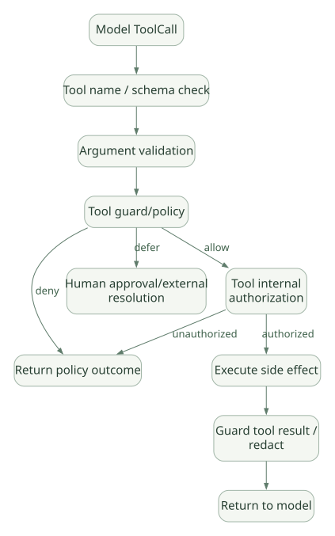

SECOND STUDY / Dependencies·Capabilities·승인
Dependencies·Capabilities·승인
이번 단원의 읽는 관점
Run별 자원과 실행 Hook, Deferred 요청을 후속 Run에서 해결하는 프로토콜을 연결합니다.
살펴볼 경계승인 원본·History·메타데이터·Call ID와 결과 대응을 서버에서 보존해야 합니다.
이 페이지의 세부 목차
14. Dependencies와 RunContext의 데이터 흐름#
14.1 왜 의존성 주입이 중요한가#
Agent의 Tools가 데이터베이스·파일·사내 인증·고객별 설정에 접근할 때, 모든 값을 Global 변수에서 찾으면 테스트와 동시 요청 격리가 어려워진다. PydanticAI는 deps_type과 RunContext를 사용해 실행 단위의 자원·상태·식별자를 전달할 수 있게 한다.
Caller-created authenticated dependency bundle
→ Agent.run(..., deps=...)
→ run context
→ instructions/tool/capability callback
→ authorized resources중요한 점은 deps가 자동으로 안전한 값이 되는 것은 아니라는 사실이다. API 서버에서 Client가 제출한 tenant_id를 검증 없이 deps에 넣으면 Runtime은 그 잘못된 값을 그대로 전달한다.
14.2 의존성과 Message History의 차이#
deps: Python 객체로 Tool/Hook이 사용하는 내부 자원.- Message History: 모델이 보는 과거 요청·응답 콘텐츠.
- Tool Result: 데이터 접근 결과를 모델에게 제공하는 콘텐츠.
보안상 원칙: DB 연결 문자열, 인증 토큰, 비밀 키 같은 정보를 RunContext.deps에 두는 것은 유용하지만, Tool 결과나 로그에 노출하지 않도록 별도 정책이 필요하다.
14.3 동시 요청 시 주의#
여러 Agent.run()이 같은 Agent 인스턴스에서 실행될 수 있다고 해서, deps 내부의 객체가 자동으로 격리되는 것은 아니다. 공유 DB Client는 적절히 사용해도 되지만, 요청별 Mutable User State를 Global이나 Singleton 필드에 두면 교차 오염이 생길 수 있다.
검토: 호출 컨텍스트의 생명주기, Connection Pool, Transaction Scope, ContextVar 전파, Sync Tool Thread 경계.
공식 참고: Dependencies, RunContext API.
15. Guardrails·Capabilities·Hooks: 실행 개입 지점#
15.1 Guardrail의 세 가지 의미#
일반적으로 'Guardrail'이라고 부르는 구현은 기능적으로 다르다.
- Model Instruction: 위험 작업을 하지 말라는 지시. 모델이 따라주기를 기대하지만 강제 경계는 아니다.
- Runtime Validation: 모델의 입력·출력·ToolCall을 실제 코드가 검증·수정·거부. 강제력이 더 강하다.
- Sandbox/Authorization: 프로세스·파일·DB 접근 자체를 정책적으로 제한. 보안 경계의 핵심이다.
PydanticAI의 Pydantic Validator는 주로 2의 일부이며, 별도 Harness Guardrails는 입력/출력/Tool 단계의 정책 훅을 제공한다. 3은 운영 환경과 Tool 자체의 접근 제어가 담당한다.
15.2 Core Capability와 별도 Harness의 책임#
[DOC] Core는 다양한 Capability Hook을 제공한다. Harness 패키지는 InputGuardrail, OutputGuardrail, ToolGuardrail, Memory, Skills, Context Management 등의 기능을 Capabilities 방식으로 추가한다. 두 패키지를 동일한 설치물로 간주하면 안 된다.
| 개입 지점 | 가능한 역할 | 주의 |
|---|---|---|
| Run 시작 전 | 입력 정책, 설정, Usage 제한 | 차단에 실패하면 이후 Tool이 실행 가능 |
| Model 요청 준비 | History 변경, Tool 노출 필터, 모델 선택 | 이미 노출한 Tool에 뒤늦게 정책 적용 주의 |
| Tool 인자 검증 전후 | 타입·권한·승인 판단 | 인자 타입 유효 ≠ 실행 허용 |
| Tool 실행 직전 | 부작용 방지, 승인·정책 체크 | 중요한 정책은 Tool 자체에서도 다시 검사 |
| Tool 실행 후 | 결과 필터링·PII/Secret 제거 | 이미 발생한 부작용은 되돌리지 못함 |
| Final Output 전 | 출력 스키마, 보안·정확성 검사 | 모델 내부 사고·외부 사실까지 자동 보장하지 않음 |
[DOC] Capabilities, Harness Guardrails.
15.3 Tool Guardrail의 실질적인 실행 흐름#
가로로 이동해서 읽을 수 있습니다. 도식 크게 보기 ↗

원문의 학습용 도식입니다. 연결 방향·분기 조건·점선·쌍방향 연결을 보존해 세로로 배치했습니다. 실제 구현·의사코드·해석의 구분은 본문을 함께 읽으세요.
도식 원문 보기 (Mermaid)
flowchart TD
C[Model ToolCall] --> S[Tool name / schema check]
S --> V[Argument validation]
V --> G[Tool guard/policy]
G -->|deny| D[Return policy outcome]
G -->|defer| P[Human approval/external resolution]
G -->|allow| A[Tool internal authorization]
A -->|authorized| E[Execute side effect]
A -->|unauthorized| D
E --> R[Guard tool result / redact]
R --> M[Return to model]이는 표준 Hook 구현의 책임 구분을 보여주는 교육용 구조다. 실제 Guardrail의 호출 순서와 정책 결과는 해당 Harness 패키지 버전의 소스 및 설정을 별도로 검증해야 한다.
15.4 Capabilities의 중요한 설계 이점#
- Agent 본체를 상속·수정하지 않고 행동을 추가할 수 있다.
- 서로 다른 Run에서 사용할 Capability를 조합할 수 있다.
- Tool·Instructions·Model Settings·Event Hook을 하나의 컴포넌트로 묶을 수 있다.
- Guardrail, Memory, Skills, Workspace 등을 서로 교체할 수 있다.
그러나 복잡성이 증가한다.
- Hook 실행 순서가 결과에 영향을 줄 수 있다.
- 여러 Capability가 동일 Message/Tool을 수정하면 충돌 가능.
- 비동기 Hook이 Blocking I/O를 하면 전체 Loop 지연.
- Capability 활성/비활성에 따라 Tool 캐시의 재해석이 필요.
- 변경된 Tool 설명·스키마가 프롬프트 캐시에 영향을 줄 수 있다.
[SRC] ToolManager가 resolved_capability_ids를 별도로 추적하는 이유도 이러한 동적 적용 경계와 관련 있다.
15.5 Input Guardrail의 동기적 차단을 어떻게 설계할까?#
민감한 Tool이 있는 환경에서는 아래를 명시해야 한다.
- 인증되지 않은 요청을 모델 호출 전에 차단.
- 정형 입력의 필수 검증을 Tool 실행 전에 완료.
- Tool 함수 내부에서 인가 확인(다른 경로에서 Tool이 호출될 수 있음).
- 결과 검증은 실행 후 추가 보호층으로만 간주.
- Guardrail 예외를 삼켜 정상 결과로 만드는 예외 처리에 주의.
설계 분석: 사전 Input Guardrail만 있다고 외부 권한 경계가 만들어지는 것은 아니다. Runtime의 훅 경로를 벗어난 호출 또는 서버의 승인된 것처럼 보이는 클라이언트 입력은 Tool에서 최종적으로 검증해야 한다.